공개해도 되는 작업 산출물 모음 — 실측 정리 · 리서치 · 시각화. 개인 식별 정보와 자격증명은 제거한 것만 올린다. 최신순.
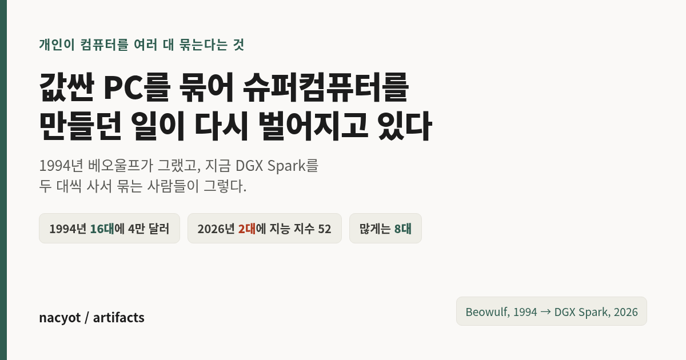
개인이 같은 컴퓨터를 여러 대 사서 하나로 묶는 일은 컴퓨팅 역사에서 드물다. 여러 대를 갖는 것과는 다른 얘기다. 1994년 NASA의 베오울프는 시중 PC 열여섯 대를 이더넷으로 묶어 4만 달러에 슈퍼컴퓨터를 대신했는데, 그것을 돌아가게 만든 것은 벤더가 아니라 사용자들이 직접 짠 드라이버와 채널 본딩과 조립법이었다. 3Com이 자기 리눅스 드라이버를 낸 것은 그로부터 6년 뒤다. 지금 DGX Spark를 두 대씩, 많게는 여덟 대씩 사서 묶는 사람들에게서 같은 구조가 보인다. 1995년 논문 원문과 커널 소스, 지금의 공개 기록을 나란히 놓았고, 모델 크기와 지능 지수가 개인 장비의 한계를 언제 넘었는지를 그래프로 확인했다.
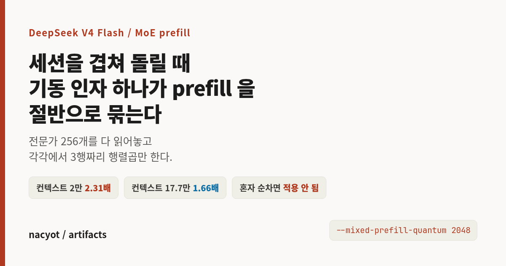
로컬 서빙 중 프롬프트 재계산이 이상하게 느렸다. 원인은 --mixed-prefill-quantum 의 기본값 128. 전문가 256개 중 95%를 읽어놓고 각각에서 3행짜리 행렬곱만 하니 산술강도가 바닥이었다. 2048 로 올리면 합성 프로브에서 2.31배, 실제 코딩 에이전트 셋을 동시에 돌린 작업에서 2.20배가 된다. 적용 조건(요청이 겹칠 때만 켜진다), 원인 분해, 값 고르는 법, 4096 그래프 경계 파편의 실제 비용(5%)까지. 실제 작업 중 서버가 낸 파형도 붙였다.
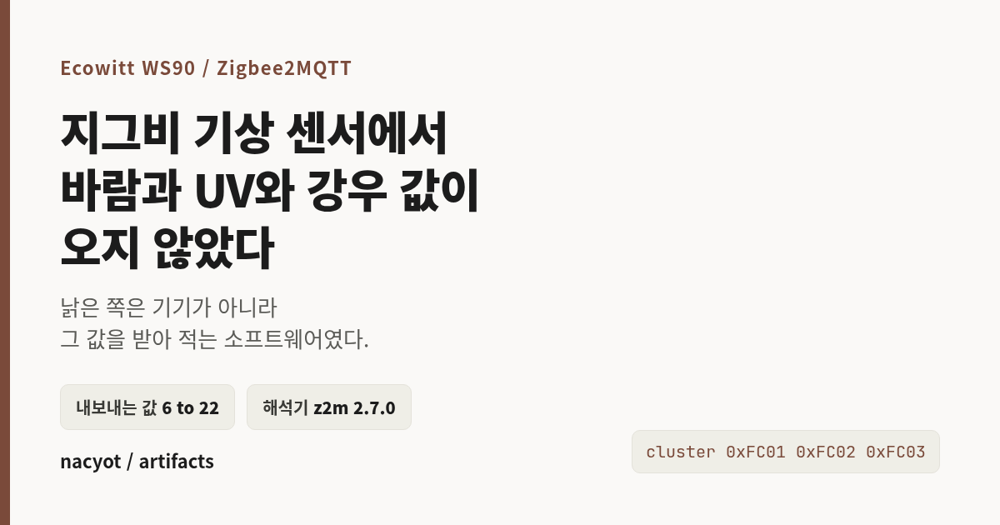
7-in-1 기상 관측 센서를 지그비로 연결했더니 온습도와 기압과 조도만 왔다. 기기가 안 보내는 줄 알고 다른 게이트웨이를 찾아다녔는데, 원인은 값을 받아 적는 Zigbee2MQTT 2.6.3이었다. 클러스터 목록에 남의 회사 이름이 보이는 것이 결정적 단서였고, 해석기는 2.7.0에 들어와 있었다. 도커 태그 한 줄과 Reconfigure 한 번으로 내보내는 값이 6개에서 22개가 된 기록. 들어온 값은 실측 그래프로 붙였다.
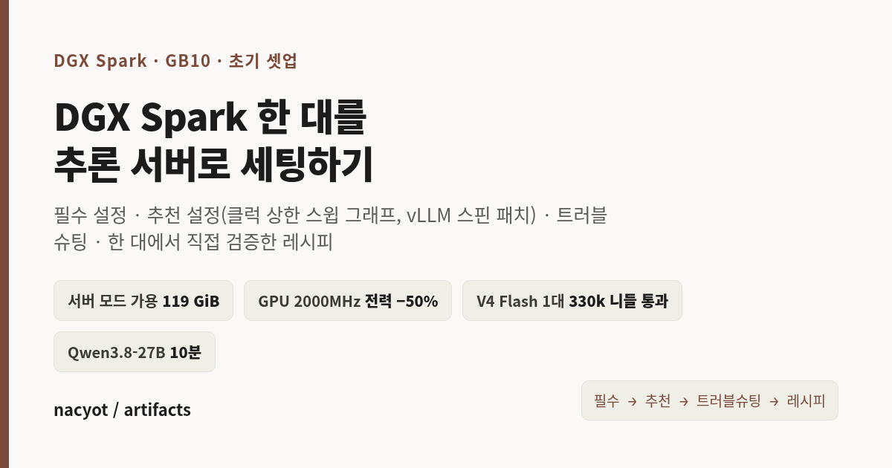
ASUS Ascent GX10(GB10) 공장 상태에서 추론 서버까지. 필수: 플랫폼 패키지를 지키며 서버 모드 전환, 드라이버 595, PD 펌웨어, 보안 기본값. 추천: GPU 클럭 상한(스윕 실측 그래프), CPU 성능코어 상한, vLLM 스핀 패치. 초기 상태 점검, 200G ConnectX-7 트러블슈팅, 한 대에서 직접 검증한 레시피(ollama Qwen3.8-27B, DeepSeek V4 Flash EXL3)까지.
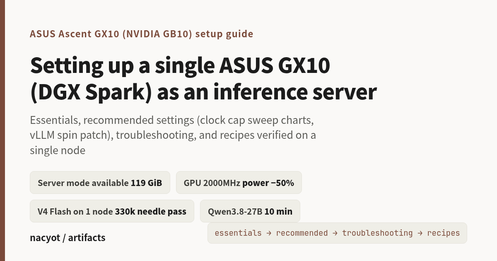
ASUS GX10 셋업 글의 영어판. 필수 설정, 추천 설정(클럭 상한 스윕 그래프, vLLM 스핀 패치), 초기 상태 점검, 200G ConnectX-7 트러블슈팅, 한 대에서 검증한 레시피. (English)
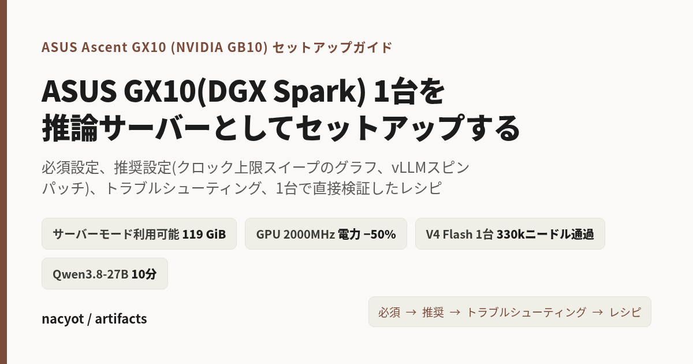
ASUS GX10 셋업 글의 일본어판. 필수 설정, 추천 설정(클럭 상한 스윕 그래프, vLLM 스핀 패치), 초기 상태 점검, 200G ConnectX-7 트러블슈팅, 한 대에서 검증한 레시피. (日本語)
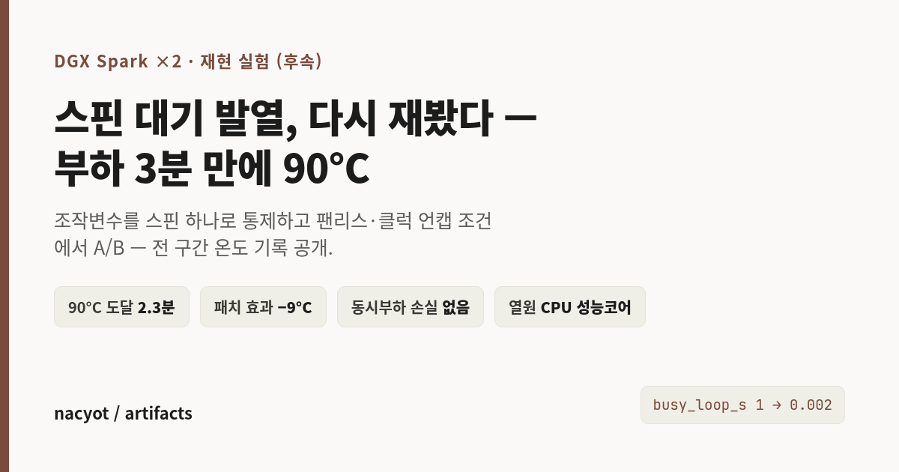
스핀 대기 기사 후속 재현. 조작변수를 스핀 하나로 통제하고 팬리스·CPU 언캡 조건에서 A/B — stock은 부하 90초에 85°C, 2.3분에 90°C, 피크 95°C. 2ms 패치는 같은 부하에서 −9°C. 동시 부하 성능 손실은 재현되지 않았고 실클럭 확인으로 스로틀 개입도 배제. 전 구간 온도 기록과 재현 명령 공개.
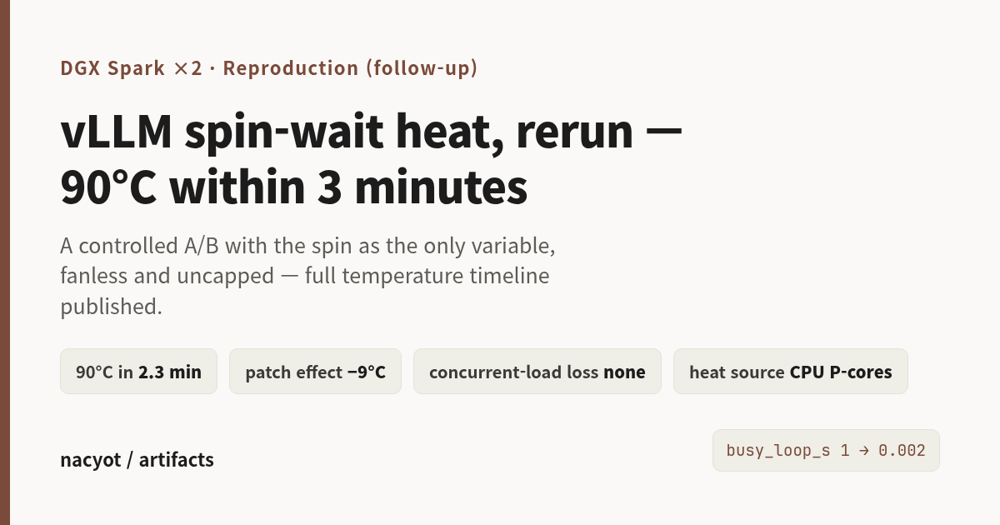
스핀 대기 기사 재현 실험의 영어판. 통제된 A/B로 온도 재현(90초에 85°C, 피크 95°C, 패치 −9°C), 동시 부하 성능 무손실, 스로틀 배제까지 — 전 구간 온도 타임라인과 재현 절차 포함. (English)
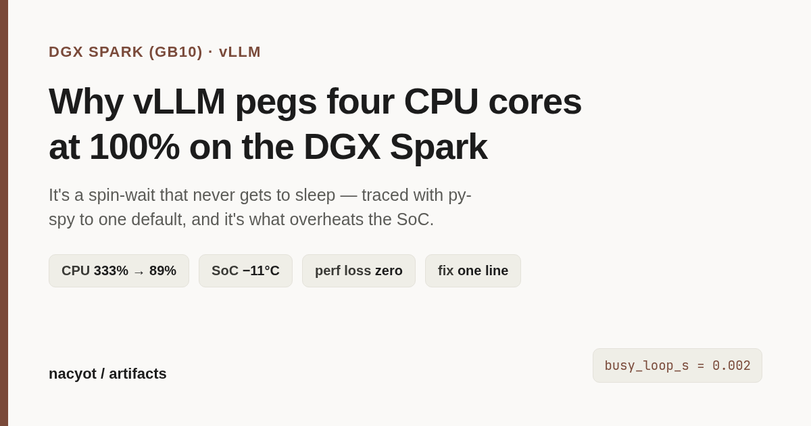
GB10에서 LLM 추론 중 CPU가 치솟는 문제를 영어권 독자용으로 재구성. M3 Ultra에서는 추론 중 CPU가 놀던 경험이 의심의 출발점 — py-spy로 vLLM 스핀 대기 기본값까지 추적, 한 줄 수정으로 CPU 333%→89%, SoC −11°C, 성능 무손실. (English)
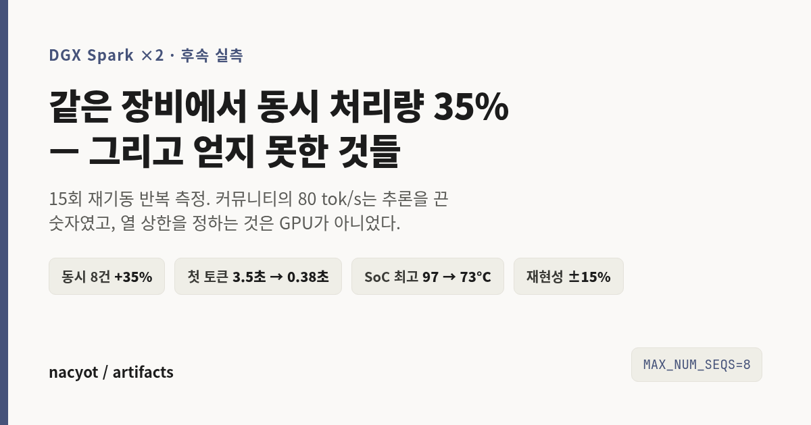
DGX Spark 2노드 DeepSeek V4 Flash 0731을 추론 켠 조건에서 재측정. max_num_seqs 6→8이 +35%, 기동 워밍업이 첫 토큰 3.5초→0.38초. 커뮤니티의 80 tok/s는 추론을 끈 숫자였고, 열 상한을 정하는 것은 GPU가 아니라 동기화 대기로 도는 CPU 성능코어였다. 15회 재기동 반복 측정.
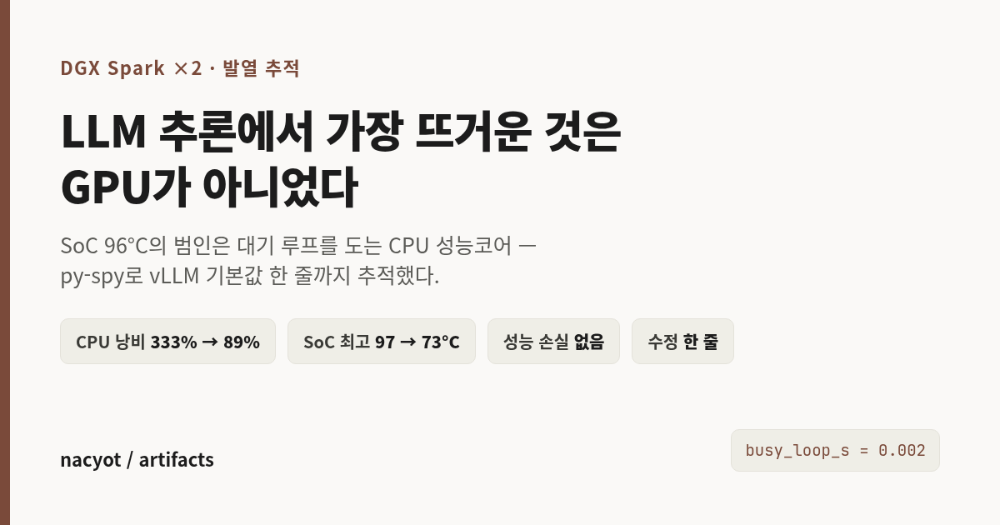
GB10 2노드 vLLM 서빙에서 SoC 96°C의 열원을 추적하니 GPU가 아니라 대기 루프를 도는 CPU 성능코어였다. py-spy로 vLLM 기본값 한 줄까지 내려가 수정 — CPU 333%→89%, SoC 최고 97→73°C, 성능 손실 없음. 팬 A/B와 클럭 실험 포함.
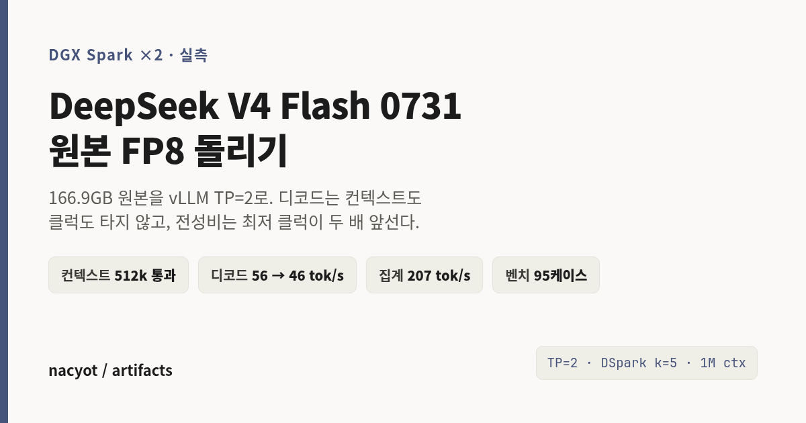
DGX Spark(GB10) 2노드에 166.9GB 원본 FP8을 vLLM TP=2로. 디코드는 컨텍스트(256→512k)도 클럭(2000→2800MHz)도 거의 타지 않고, 프리필만 2400MHz에서 포화한다. 전성비는 최저 클럭이 두 배 앞선다. 95개 케이스 벤치와 d3 인터랙티브.
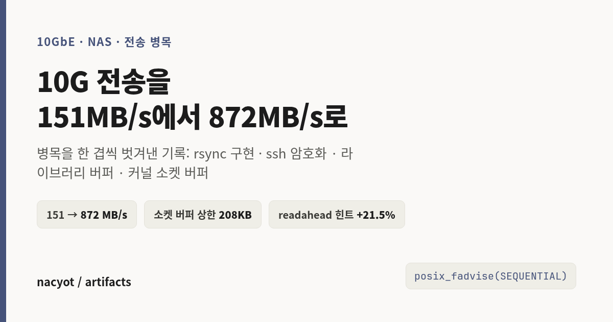
10GbE 홈랩에서 하드웨어가 낼 수 있는 속도와 표준 도구가 실제로 내는 속도의 격차를 계층별로 분해했다. ssh 암호화, 직렬 처리, 커널 소켓 버퍼 기본값, 디스크 readahead 힌트. 단독 A/B로 각각의 몫을 검증.
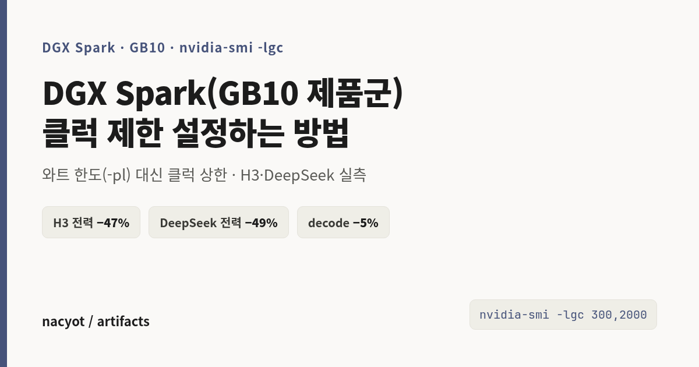
GB10 클럭 상한(300–2000MHz) 실측: MiniMax-H3 부하 전력 약 −47%, 생성 시간 +9~17%. systemd 영구 적용과 PD 고착 버그 구분법.
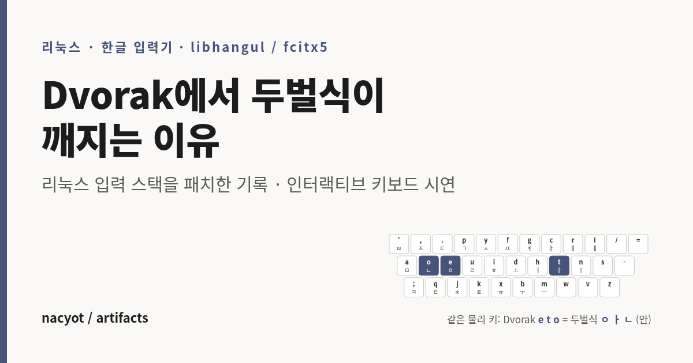
영문 Dvorak + 한글 두벌식은 Windows·macOS 공식 지원이 없는 조합. libhangul과 fcitx5-hangul 소스 패치로 근본 해결. 실패한 우회 세 번, 실사용에서 잡은 문장부호 누수, DBus 활성화 함정까지 타임라인으로 정리하고 키보드 배열 그림으로 매핑을 보여준다.
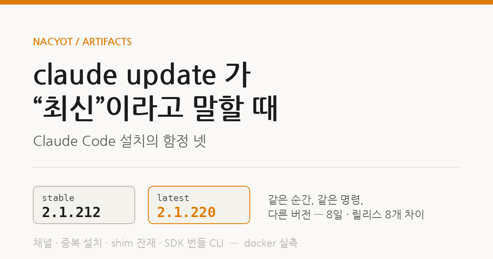
claude update는 “up to date”라는데 모델은 4.8까지만. 범인은 stable 채널(2.1.212)에 묶여 있던 CLI였다. Opus 5를 쓰려면 필요한 버전(2.1.220, latest 채널)부터 채널을 확인하고 바꾸는 법, 중복 설치와 shim 잔재 정리까지. 전부 docker 컨테이너 실측.
화면에 보이는 모든 것의 이름과 구조: 상단 바(Waybar)와 모듈, 런처(Walker)와 메뉴 체계, 알림(Mako), OSD, 테마, 워크스페이스와 스크래치패드, omarchy CLI, 설정이 흐르는 세 층. 클릭해 보는 화면 지도와 스크래치패드 시연을 담은 4.0 alpha 기준 정리. 코딩 에이전트로 고치는 법까지.
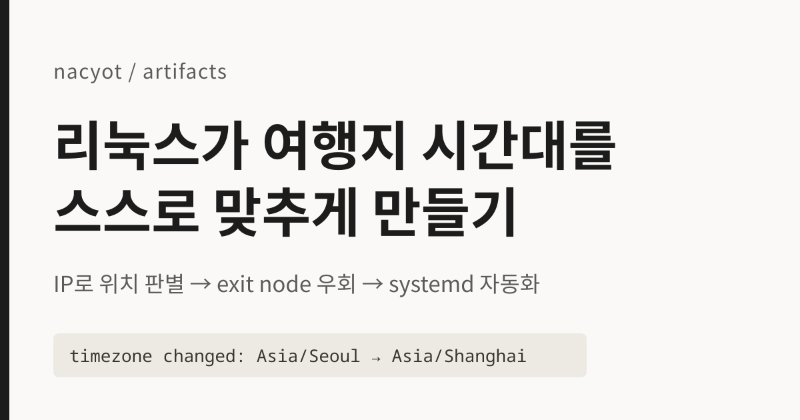
macOS는 주변 WiFi로 위치를 잡아 시간대를 바꾼다. 그 방식을 리눅스에서 그대로 만들어 서울의 건물을 20m 오차로 짚었지만 중국에선 데이터가 없어 실패했다. 그래서 IP로 되돌리되 exit node는 ip rule로 우회하고, systemd 서비스로 자동화했다. 주변 AP 제조사로 나라를 가려내는 보완책과 실측 데이터까지.
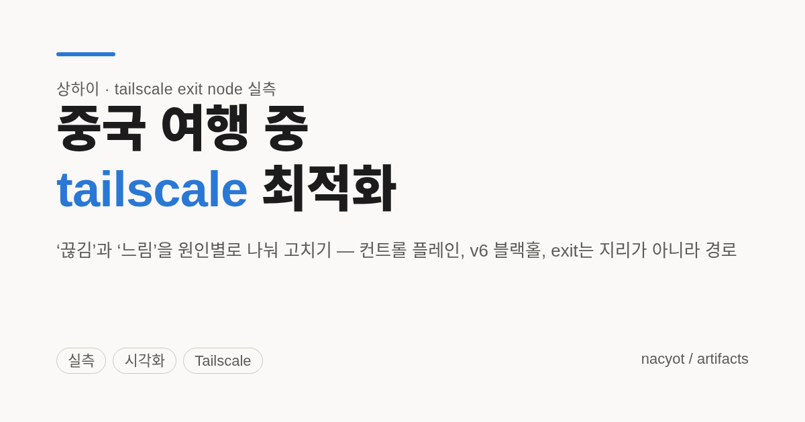
중국에선 Claude Code·구글이 로컬망으로 안 열린다. 로밍이 느릴 때 중국 회선을 exit node로 우회해 국제망에 나가고, 중국 서비스는 반대로 중국 회선으로 오간 기록. 느림과 불안정을 갈라 고친 3단계 실측 + fast.com/speedtest.cn 대비.
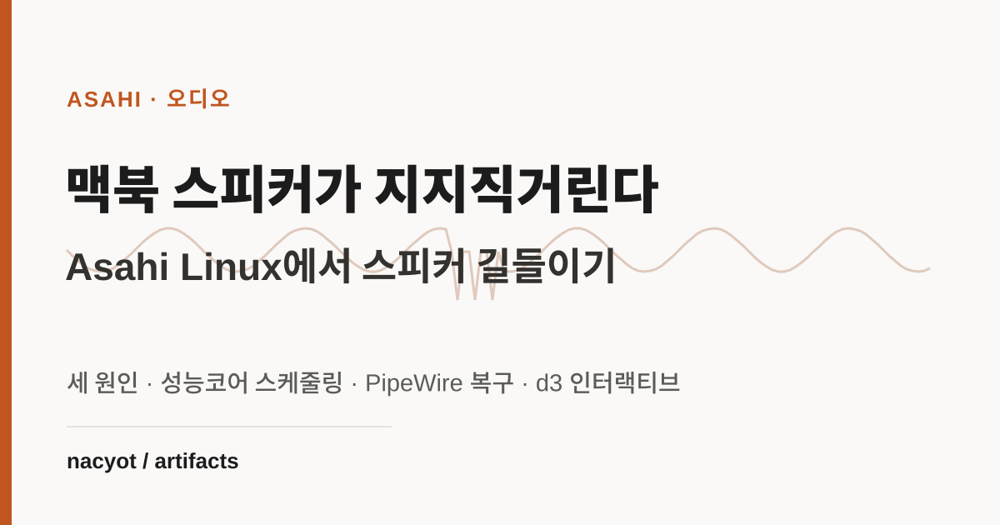
복잡한 음악에서 "칙칙" 끓고 순간 끊긴다. 하드웨어가 아니라 세 겹의 소프트웨어 문제(낡은 DSP 프로파일, 효율코어 스케줄링, 스트림 전환). 원인과 처방, macOS가 멀쩡한 이유.
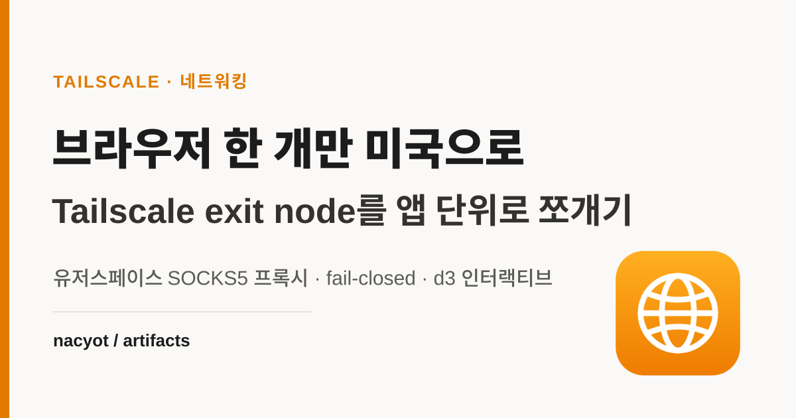
exit node를 켜면 기기 인터넷이 통째로 넘어간다. 유저스페이스 SOCKS5 프록시로 브라우저 한 개만 exit node로 내보내고 나머지는 그대로. 구축, 검증, fail-closed 분석.
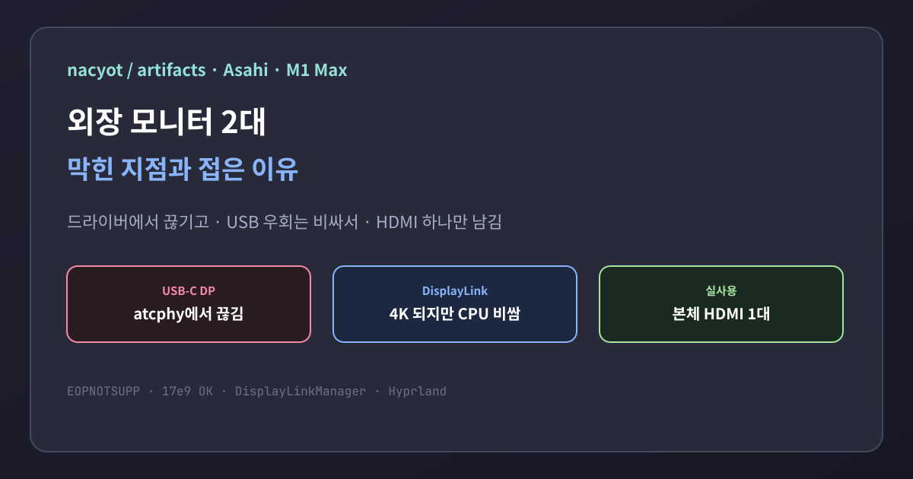
DP는 드라이버에서 끊기고, DisplayLink는 4K까지 열리지만 CPU가 비싸다. 실사용은 본체 HDMI 하나. stock Asahi 실측.
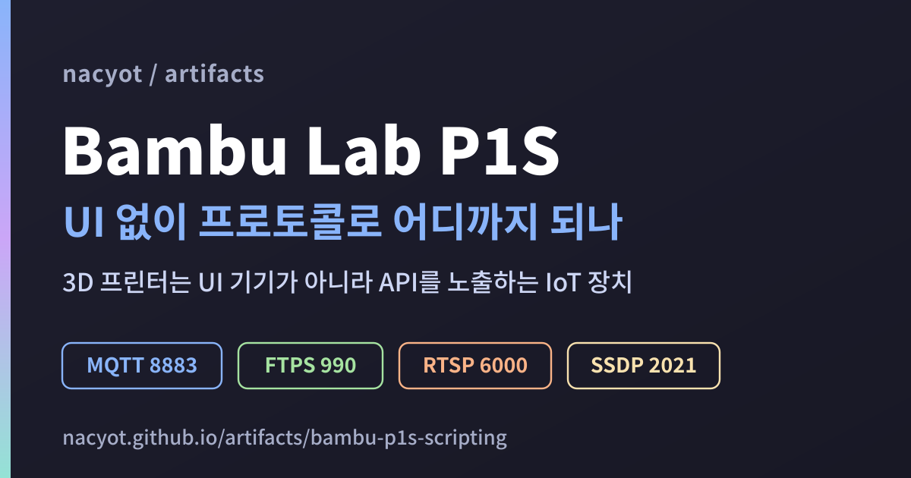
3D 프린터를 앱 없이 MQTT·FTPS 프로토콜만으로 제어한 실측 정리. "프린터는 UI 기기가 아니라 네트워크 API를 노출하는 IoT 장치"라는 관점 + d3.js 시각화.